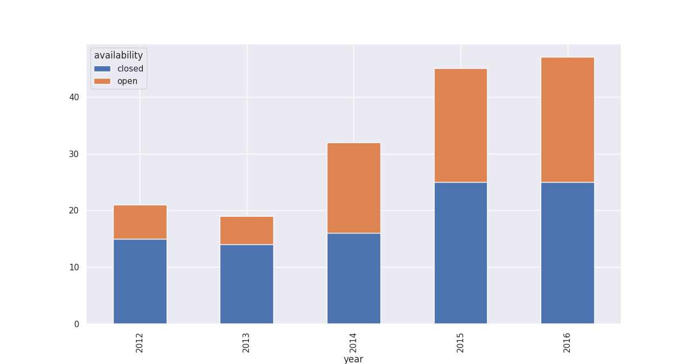
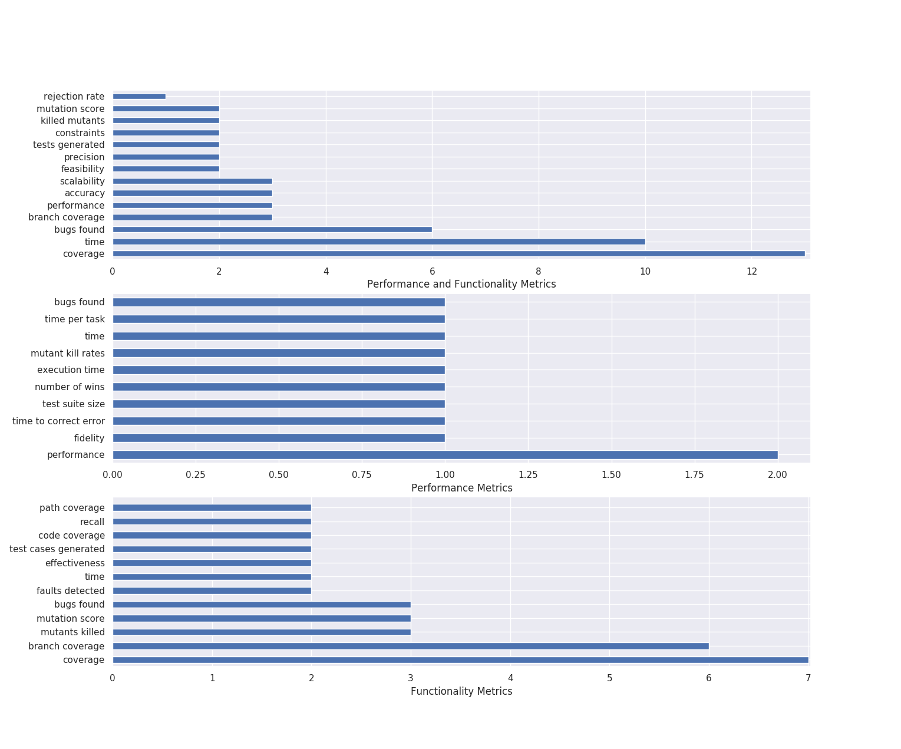

Systematic Analysis of testing-related publications concerning reprocucibility and comparability
Bachelor's Thesis Defense by Artur Solomonik
Referees: Prof. Dr. Norbert Siegmund, Prof. Dr. Martin Potthast
Software Testing
Software Testing Life Cycle


Software Testing Research
- Generating test suites
- Exploration pinciples
- Mutation testing
- Executing generated test suites
- Prioritization and Reduction of Test Cases
- Automating test case creation, selection and execution
- Finding new approaches on organizing testing processes
- Testing Workflow
- Decision Making Process
- When and What to Automate?
Software Testing Research
- Testing Levels
- Data-Flow Testing, Static Code Analysis | Unit Testing
- Backbone-, Client-Server-, Bottom-Up | Integration Testing
- GUI Testing, End-To-End Testing | System Testing
- Reliability and Stability, Chaos Testing | Acceptance Testing
- Execution Paradigms
Test Execution Paradigms

How do we know the testing system is working?
Empirical Software Evaluations
Evaluating result data
- Present the result data set and identify significant values
- Connect hypotheses and results
- Compare related work and their findings
- Argument the improvement or benefits of the approach
- Apply suitable metrics
Reproducibility
Goal: Provide the reader with every information and resource necessary to recreate the findings presented in the paper
Reproducibility Attributes
- Reproduction score influenced by data set attributes
- Identification: Explanation of where the data is and what it is called
- Description: Level of the of the explanation regarding the element
- Availability: Ease of accessing or obtaining the research elements
- Persistence: Confidence in future state and availability of the elements
- Flexibility: Adaptability of the elements to new environments
- Varying data sources - Attributes not applicable to anything
Comparability
Goal: Assess papers on whether empirical comparisons in the evaluation are appropriate or existent.
- Criteria for comprehensible evaluations
- Strategies of Comparison
- Connectivity to related work
How can we understand the research strategies of software testing publications in terms of reproducibility and comparability?
Paper Classification
Data Source
- Papers from 10 popular software engineering conferences (ASE, ICSE, ISSTA, ...)
- Additional publications from two journals (ESE, TOSEM)
- Frequently mentioned publications
- Papers from modification / refinement phases
Processed Data Set
Raw Data Set
Spreadsheet with 8060 registered papers of which 360 are classified by 23 columns
205 documented benchmarks
Over 15000 bibliographic and semantic connections between records
| Classification | Parameters |
|---|---|
| Availability | [open/closed] |
| Data Set State | [vanilla/modified] |
| Selection Cause | [...] |
| Modification Cause | [...] |
| Sub-Check Systems | [single/multiple] [named/unnamed] |
| Classification | Parameters |
|---|---|
| Contribution | [...] |
| Choice of Metric | [functionality/performance/both] |
| Metrics | [ ] Metrics |
| Classification | Parameters |
|---|---|
| Error Creation | [generation/real world/both] |
| Error Annotation | [TRUE/FALSE] |
| Comparison | [TRUE/FALSE] [former/foreign/parallel] [exclusive/inclusive] |
| Selection Causes | Modification Causes |
|---|---|
| Quality | Dismiss Irrelevant |
| Quantity | Inject Defects |
| Suitability | Compatibility |
| Defectiveness | Make Suitable |
| Popularity | |
| None | |
| Misc. |
Open Source vs. Closed Source
Software Testing Evaluation Metrics
Choice of Metric and Error Annotation
Selection and modification causes of benchmarks
Bibliographic Networks
Current implementations of paper networks
- Visualize the connection and influence between authors
- Giving insight rather than specific values
- Connected over citations, bibliographic coupling, co-citations or co-authorship relations
- Color- and size-coding node information
- Geographic hierarchies
Additions and Improvements
- Benchmarks and software systems as their own entities in a network
- More insight on reproducibility
- Multidimensional graph data visualization without clutter
- Tailouring the visualization to a certain aspect of a publication (e.g. the evaluation)
Visualizing bibliographic networks
TeLO-S
D3 visualization of testing publications in a node-link force-directed graph
Cypher Query Input and Configuration
Selecting sepecific nodes from the Neo4J graph data base and manipulating the layout and color-coding
Contribution Plot
Immediate assessement of proportions of contribution representatives
Node analysis
Additional information on a selected node concerning his references
Findings

Patterns
Vanishing Point Pattern
Outsider Pattern
- Loose nodes in a subgraph without any connection to other queried nodes
- Nodes might imply a connection to other unqueried research fields
- Misclassifications or special cases
Familiar Foreigner Pattern
Chain Pattern
Conclusion
- Most evaluations conducted similarly
- Choice of benchmark varies significantly
- Availability as a major reproducibility issue
- Solution: Dedicated sub-check systems (possibly provided by conferences)
- Mutation scores and coverage metrics widely used
- Findings of closely related papers rarely mentioned
- Bibliographic networks benefit from sub-check system nodes and different relation types
- Comparability improves continuous improvement of research
- Comparing evaluations unfortunately very uncommon, yet beneficial
Future Work
- Adding referencing patterns to the visualization
- Classifiers for testing paper classification
- Multiple refinement cycles of the data set using relevant citations
- Implementation of author nodes, citation scores and bibliographic coupling
- Hierarchical edge bundling regarding relevancy, geography or popularity
- Generalization for other research topics aside from software teting